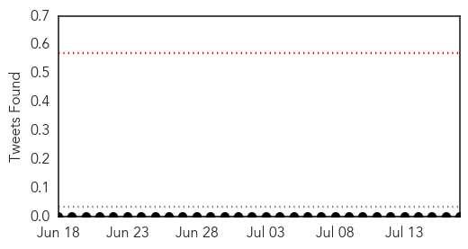
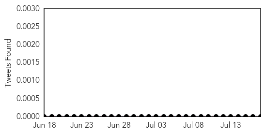
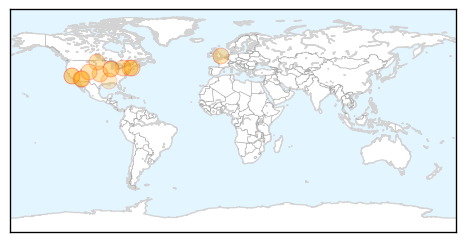
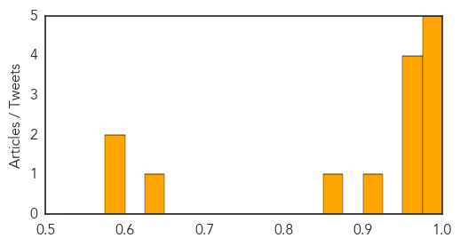

Mumps
30-Day Web Trend
0 alerts, 0 warnings
30-Day Twitter Trend
0 alerts, 0 warnings

Article Locations

Article Confidences

Top Articles:
-
No articles found for Jul 17, 2015
Top Tweets:
-
No tweets found for Jul 17, 2015
West Nile Virus
30-Day Web Trend
7 alerts, 1 warnings
30-Day Twitter Trend
4 alerts, 0 warnings

Article Locations
Article Confidences
Top Articles:
- 0.995
- Is state’s drought to blame?
- 0.993
- Your West Valley News: Valley & State
- 0.992
- Tick Borne Encephalitis Attributed to Powassan Virus in Canada
- 0.978
- West Nile virus found in mosquito in Massachusetts
- 0.978
- West Nile Virus UPDATE: More U.S. States Broaden Monitoring Efforts For Mosquito-Borne Infections : U.S. : Chinatopix
- 0.959
- Don’t let blood-sucking ticks and dead beavers plague your Colorado hike
- 0.958
- Officials: Two dead in Maricopa County after getting West Nile virus
- 0.957
- West Nile Virus Found in Western Mass. Mosquito
- 0.955
- West Nile virus found in mosquito in Sheffield
- 0.905
- Cambridge woman has region’s first human case of West Nile virus this year
- 0.869
- Mosquitoes with West Nile virus found in Plano, Oswego and Elburn
- 0.638
- West Nile detected in Rankin Co. mosquitoes
- 0.591
- West Nile-Positive Mosquitoes Found in Kendall County
- 0.575
- Baiting Mosquitoes with Fake Blood
Top Tweets:
-
No tweets found for Jul 17, 2015